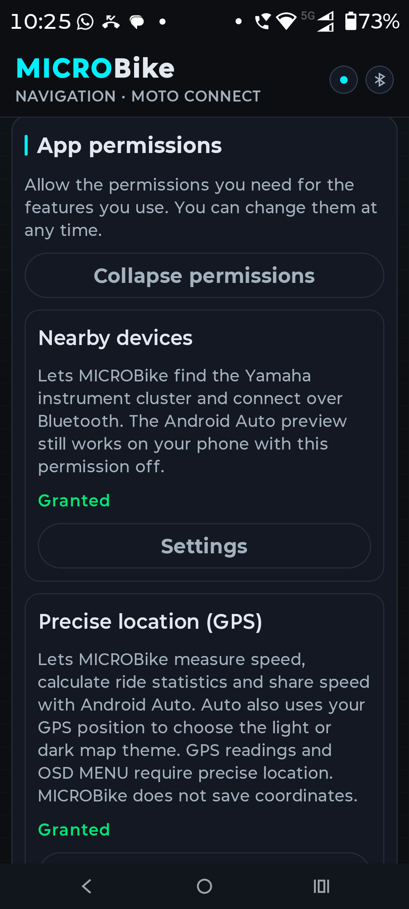
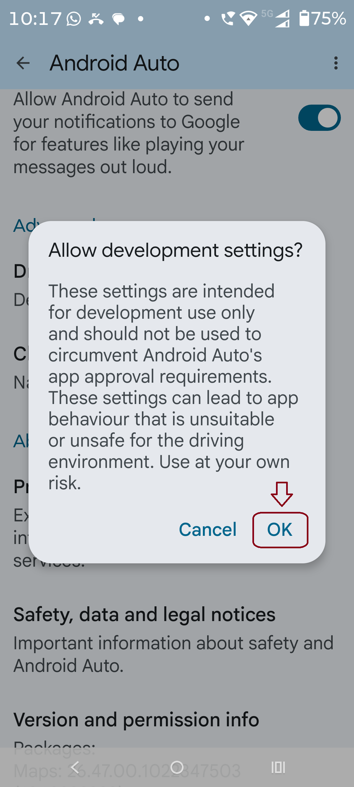
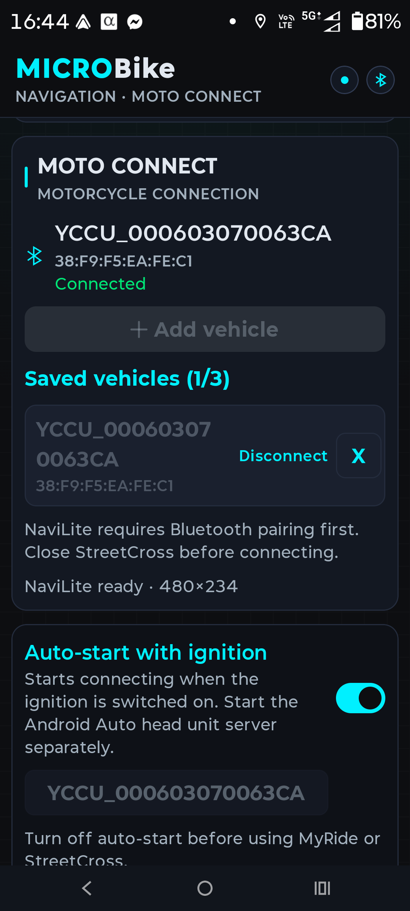
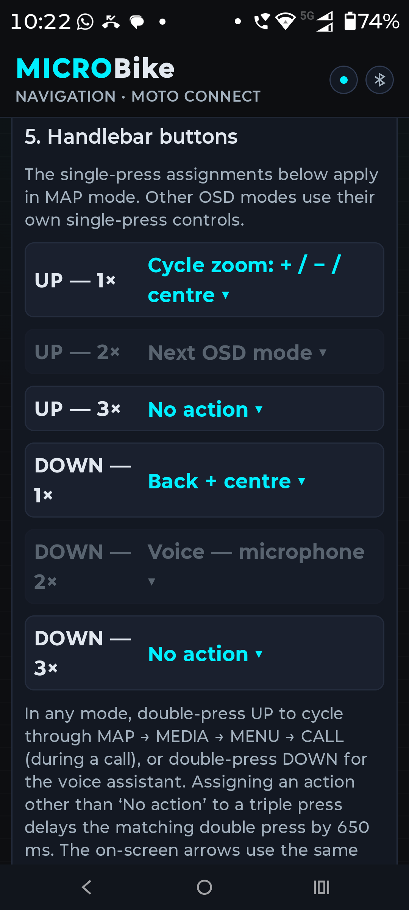
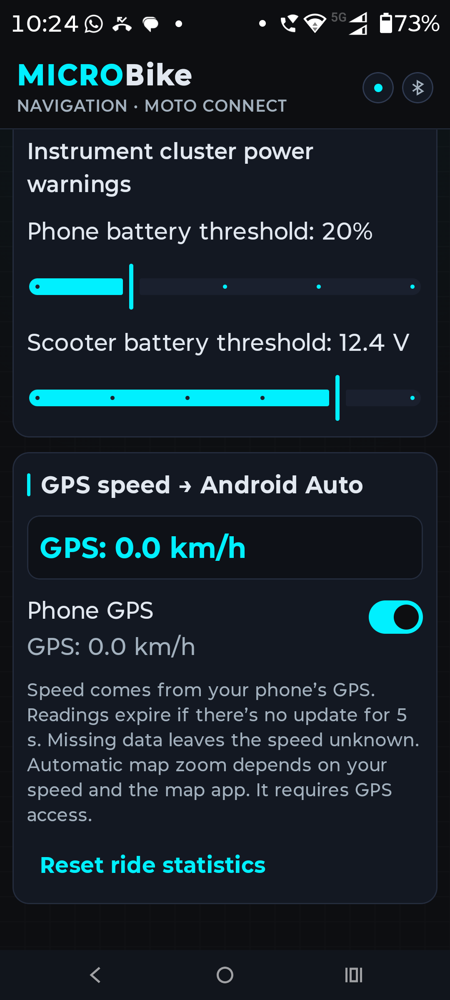

Część 1 · Szybki start
1. Wymagania, pierwsze uruchomienie i zgody
Aby rozpocząć, przygotuj:
- Telefon z Androidem 12 lub nowszym (API 31+).
- Zainstalowaną i włączoną aplikację Android Auto (na większości nowszych telefonów jest już wbudowana w system).
- Zainstalowane MICROBike.
- Skuter Yamaha NMAX 125 Tech Max (2025/2026) z modułem licznika YCCU / Garmin CCU. Sam podgląd Android Auto na telefonie możesz przetestować także w domu, bez skutera i Bluetooth.
Bezpieczeństwo: całą konfigurację, parowanie Bluetooth i kalibrację punktu Wyśrodkuj wykonuj wyłącznie na postoju.
- Zaakceptuj ekran powitalny. Po pierwszym uruchomieniu MICROBike zapoznaj się z ekranem Przed jazdą — Ważne informacje i dotknij Rozumiem i akceptuję.
- Przejdź przez kreator „Uprawnienia aplikacji”. Aplikacja poprosi kolejno o zgody. Każdą zgodę możesz nadać od razu albo pominąć przyciskiem Pomiń i włączyć później w ustawieniach.
- Urządzenia w pobliżu do licznika — wymagane do wykrywania i łączenia z YCCU oraz pomiaru napięcia akumulatora.
- Dokładna lokalizacja (GPS) zalecana — włącza prędkość GPS dla Android Auto, statystyki jazdy, automatyczny motyw dzień/noc oraz tryb MENU na postoju.
- Powiadomienia MICROBike Android 13+ — wyświetla na pasku systemowym informację o aktywnym połączeniu i GPS z szybkim przyciskiem zatrzymania.
- Stan telefonu i Dostęp do powiadomień (OSD) opcjonalne — pozwalają wyświetlać na liczniku nazwę rozmówcy, czas połączenia i tytuł odtwarzanego utworu.
- Wyświetlanie nad innymi aplikacjami opcjonalne — pozwala uruchamiać trasy z menu licznika (Dom, Praca, Ulubione), gdy MICROBike działa w tle.

images/01-ekran-powitalny.png
Ekran powitalny „Przed jazdą — Ważne informacje” z przyciskiem „Rozumiem i akceptuję”.

images/02-uprawnienia-kreator.png
Kreator „Uprawnienia aplikacji” (krok 1 z 6 — Urządzenia w pobliżu).
2. Włączenie serwera deweloperskiego Android Auto
MICROBike odbiera obraz bezpośrednio z lokalnego serwera wbudowanego w aplikację Android Auto na Twoim telefonie. Tryb programisty Android Auto włącza się tylko raz. Sam serwer jednostki centralnej należy uruchomić przed jazdą (jeśli wcześniej został zatrzymany lub telefon był restartowany).
- Otwórz ustawienia Android Auto z poziomu MICROBike. Na górnej karcie STRUMIEŃ NAWIGACJI dotknij przycisku SET. Jeśli Android Auto nie jest jeszcze zainstalowane, zobaczysz przycisk Otwórz Google Play.
- Odblokuj tryb programisty (jednorazowo). W otwartych ustawieniach Android Auto przewiń na sam dół i stuknij 10 razy w pozycję „Wersja” (lub „Wersja i uprawnienia”).
- Potwierdź okno dialogowe. Gdy pojawi się komunikat „Czy zezwolić na ustawienia programisty?”, wybierz OK.
- Uruchom serwer jednostki centralnej. W prawym górnym rogu ustawień Android Auto otwórz menu ⋮ i wybierz Uruchom serwer jednostki centralnej. Na części telefonów opcja ta nazywa się Włącz serwer radioodtwarzacza. Na górnej belce Androida pojawi się powiadomienie o działającym serwerze.
- Wróć do MICROBike. Aplikacja wykryje działający serwer i połączy się automatycznie (kropka statusu w nagłówku zmieni kolor na cyjanowy, a w karcie pojawi się podgląd mapy na żywo). Jeśli wcześniej zatrzymałeś projekcję ręcznie, dotknij START.

images/03-aa-przycisk-set.png
Karta „STRUMIEŃ NAWIGACJI” z komunikatem o uruchomieniu serwera i przyciskiem SET na dole.

images/04-aa-ustawienia-wersja.png
Dół ustawień Android Auto — zaznaczona pozycja „Wersja” (stuknij 10 razy).

images/05-aa-tryb-programisty.png
Dialog Android Auto „Zezwolić na ustawienia programisty?” z przyciskiem OK.

images/06-aa-uruchom-serwer.png
Rozwinięte menu ⋮ w prawym górnym rogu Android Auto z zaznaczoną opcją „Uruchom serwer jednostki centralnej”.

images/07-aa-podglad-live.png
Powrót do MICROBike: widoczna mapa w karcie STRUMIEŃ NAWIGACJI i zielona/cyjanowa kontrolka połączenia.
Wskazówka: serwer Android Auto działa wyłącznie lokalnie wewnątrz telefonu (127.0.0.1) i nie wymaga podłączania kabla USB ani internetu do samego przesyłu obrazu.
Oficjalna dokumentacja Google o serwerze jednostki centralnej Android Auto
3. Sparowanie i połączenie z licznikiem Yamaha
- Sparuj skuter w systemie Android. Włącz zapłon skutera oraz Bluetooth w telefonie. W systemowych ustawieniach Bluetooth telefonu sparuj moduł licznika o nazwie zaczynającej się od YCCU.
- Zamknij konkurencyjne aplikacje. Zamknij aplikację StreetCross (oraz Yamaha MyRide, jeśli korzystasz także z pomiaru akumulatora), ponieważ licznik obsługuje jedno aktywne połączenie nawigacyjne naraz.
- Dodaj pojazd w MICROBike. Przejdź do karty MOTO CONNECT i dotknij + Dodaj pojazd. Telefon wyszuka pobliskie urządzenia YCCU (skanowanie trwa do 15 sekund).
- Wybierz wykryty YCCU. Po wyborze pojazd zapisze się na liście (możesz zapisać do 3 pojazdów), a MICROBike połączy się z licznikiem.
- Sprawdź ekran licznika. Po uwierzytelnieniu na TFT pojawi się plansza powitalna MICROBike, a po uruchomieniu serwera Android Auto — obraz nawigacji.

images/08-bluetooth-parowanie-yccu.png
Systemowe ustawienia Bluetooth telefonu z widocznym sparowanym urządzeniem „YCCU...”.

images/09-moto-connect-polaczono.png
Karta „MOTO CONNECT” z zapisanym pojazdem YCCU i zielonym statusem „Połączono”.
Gotowe do jazdy! Przed pierwszą trasą warto jeszcze na postoju dotknąć na podglądzie wybranej aplikacji nawigacyjnej (np. Google Maps, Waze, Yanosik), sprawdzić działanie przycisku WYŚRODKUJ oraz — jeśli chcesz łączyć się bez sięgania po telefon — włączyć Autostart po włączeniu zapłonu.
Część 2 · Szczegółowy opis wszystkich funkcji
Strumień nawigacji i kalibracja dotyku
Karta STRUMIEŃ NAWIGACJI (PODGLĄD NA ŻYWO · 1280 × 720) wyświetla pełny interfejs Android Auto z pełną obsługą dotyku. W nagłówku całej aplikacji dwie kontrolki pokazują bieżący stan połączeń: kropka odpowiada za Android Auto, a ikona Bluetooth za licznik Yamaha (cyjan = połączono, bursztyn = łączenie/ponawianie, czerwień = błąd, szary = rozłączono).
Przyciski pod podglądem
- Pełny ekran
- Otwiera podgląd Android Auto na całym ekranie telefonu (z obsługą dotyku i obrotu ekranu bez przerywania strumienia). Wyjście przyciskiem Zamknij pełny ekran.
- ↑ oraz ↓
- Wirtualne przyciski kierownicy — obsługują dokładnie te same pojedyncze, podwójne i potrójne kliknięcia oraz tryby OSD, co fizyczne strzałki na skuterze. Idealne do przetestowania konfiguracji na postoju.
- BACK
- Wysyła polecenie Wstecz, a po chwili dotyka zapisany punkt Wyśrodkuj, aby wrócić do śledzenia pozycji na mapie.
- MAPA
- Natychmiast przywołuje widok aplikacji nawigacyjnej w Android Auto (przydatne np. po zakończonej rozmowie lub wyjściu do odtwarzacza).
- Mikrofon
- Uruchamia asystenta głosowego Android Auto.
- WYŚRODKUJ
- Wykonuje dotknięcie w zapisanym punkcie wyśrodkowania/kompasu mapy.
- Ustaw punkt Wyśrodkuj
- Włącza jednorazowy tryb kalibracji: po jego dotknięciu wskaż palcem na podglądzie Android Auto przycisk wyśrodkowania (kompasu / „Wyśrodkuj”) w Twojej aplikacji mapowej. Punkt zapisze się automatycznie. Kalibrację warto powtórzyć po zmianie aplikacji nawigacyjnej lub gęstości DPI.
- START / STOP / SET
- START wznawia połączenie z serwerem AA, STOP ręcznie zatrzymuje projekcję, a SET otwiera systemowe ustawienia Android Auto. Jeśli działająca sesja Android Auto przerwie się samoistnie, MICROBike automatycznie podejmie do 3 prób odzyskania obrazu (ręczne STOP anuluje automatyczne wznawianie).

images/10-kalibracja-wysrodkuj.png
Karta „STRUMIEŃ NAWIGACJI” z widocznym rzędem przycisków (Pełny ekran, ↑, ↓, BACK, MAPA, Mikrofon) oraz przyciskami WYŚRODKUJ i „Ustaw punkt Wyśrodkuj”.
Podgląd licznika i co widać na ekranie TFT Yamaha
Karta PODGLĄD LICZNIKA pokazuje dokładnie taki kadr, jaki jest wysyłany do wyświetlacza skutera Yamaha NMAX. Dotknięcie podglądu otwiera go na pełnym ekranie telefonu.
- Plansza oczekiwania MICROBike
- Gdy licznik jest już połączony i uwierzytelniony, ale Android Auto nie dostarcza jeszcze obrazu (lub projekcja jest zatrzymana), na wyświetlaczu TFT wyświetlana jest plansza powitalna MICROBike ze statusem połączenia. Znika automatycznie z chwilą nadejścia pierwszej klatki mapy.
- Lewy pasek telemetrii (zasilanie)
- W lewym marginesie obrazu wyświetlane są dwa wskaźniki po obu stronach fabrycznych strzałek licznika:
- U góry — napięcie akumulatora skutera (AKU), np.
14.1V(lub białe--.-Vprzy braku świeżego odczytu). - U dołu — poziom baterii telefonu, np.
82%(kolor zielony przy normalnym poziomie; w trakcie ładowania obok pojawia się żółty symbol pioruna; białe--%oznacza brak odczytu). - Po spadku poniżej ustawionego progu wskaźnik zmienia kolor ostrzegawczy, a w sytuacji krytycznej miga na czerwono co 0,5 s (szczegóły w sekcji Akumulator i alarmy).
- U góry — napięcie akumulatora skutera (AKU), np.
- Kontekstowa karta OSD (prawy górny róg)
- Gdy przełączysz tryb kierownicy na MEDIA, MENU lub gdy nadejdzie połączenie (TELEFON), w prawym górnym rogu mapy pojawia się kompaktowa karta podpowiadająca aktualną funkcję przycisków ↑ i ↓. Podczas aktywnej rozmowy karta pokazuje też rzeczywisty stan mikrofonu z systemu Android: cyjanowe MIC (włączony), czerwony przekreślony mikrofon (wyciszony) lub szare MIC ? (brak potwierdzenia z systemu). Po wykonaniu pojedynczej akcji na mapie pod kartą pojawia się krótkie, 2-sekundowe potwierdzenie.
- Dolny pasek statusu licznika
- Zastępuje fabryczny napis pod mapą kontekstową informacją (automatycznie dopasowywaną do limitu długości pola na liczniku):
- Tryb MAPA i MENU: czas aktywnej jazdy (
Czas:dla prędkości >2 km/h) oraz średnia prędkość (V avg:). Gdy GPS telefonu jest wyłączony, dolny pasek pozostaje pusty. - Tryb MEDIA: status odtwarzania
[PLAY]lub[PAUSE]oraz tytuł aktualnego utworu (wymaga dostępu do powiadomień). - Tryb TELEFON: nazwa lub numer rozmówcy i czas trwania aktywnej rozmowy, albo komunikat o połączeniu przychodzącym.
- Alarm braku ładowania (najwyższy priorytet): przy prędkości GPS >30 km/h i napięciu AKU <13,8 V dolny pasek zamiast statystyk wyświetla ostrzeżenie
! BRAK ŁADOWANIA.wraz z bieżącym napięciem.
- Tryb MAPA i MENU: czas aktywnej jazdy (

images/11-podglad-licznika-tft.png
Karta „PODGLĄD LICZNIKA” (lub zdjęcie ekranu TFT Yamaha NMAX) z mapą, lewym paskiem AKU / baterii telefonu, kartą OSD w prawym górnym rogu i dolnym paskiem statystyk.
Sterowanie z kierownicy i tryby OSD
Fizyczne przyciski ↑ i ↓ na kierownicy (oraz wirtualne strzałki w aplikacji) korzystają z systemu gestów (pojedyncze, podwójne i potrójne kliknięcie w oknie 650 ms) oraz czterech trybów kontekstowych.
| Tryb OSD | ↑ (1×) | ↓ (1×) | Automatyczny powrót |
|---|---|---|---|
| MAPA (domyślny) | Domyślnie: Cykl zoomu (+ / − / wyśrodkuj)* | Domyślnie: Back + Center (Wstecz i wyśrodkuj)* | Tryb podstawowy |
| MEDIA | Następny utwór | Odtwarzaj / Pauza | Po 20 s bezczynności → MAPA |
| MENU (Pulpit AA) | Następny element (rotary +1) | Wybierz element (SELECT) | Po 60 s bezczynności lub po ruszeniu → MAPA |
| TELEFON (przychodzące) | Odbierz połączenie | Odrzuć połączenie | Po zakończeniu / odrzuceniu → MAPA |
| TELEFON (aktywna rozmowa) | Wycisz / odciszenie mikrofonu (MUTE) | Zakończ rozmowę | Po rozłączeniu → MAPA |
* W trybie MAPA funkcje pojedynczych kliknięć ↑ 1× i ↓ 1× możesz dowolnie zmienić w ustawieniach.
Gesty globalne (działają w każdym trybie)
- ↑ dwa razy (2×)
- Przełącza kolejny tryb sterowania w pętli: MAPA → MEDIA → MENU → TELEFON (tryb TELEFON pojawia się w pętli tylko podczas trwającej rozmowy).
- ↓ dwa razy (2×)
- Uruchamia Asystenta głosowego (Voice) w Android Auto.
- ↑ lub ↓ trzy razy (3×)
- Domyślnie wyłączone (Brak akcji). Możesz przypisać im własne globalne akcje w ustawieniach. Uwaga: przypisanie akcji do gestu 3× wprowadza dodatkowe opóźnienie ok. 650 ms dla gestu 2× na tym samym przycisku, ponieważ aplikacja czeka na ewentualne trzecie kliknięcie.
Jak działają wybrane funkcje sterowania
- Cykl zoomu (+ / − / wyśrodkuj): kolejne naciśnięcia przybliżają mapę, oddalają ją, a trzecie naciśnięcie cofa i wyśrodkowuje widok. Po 10 sekundach przerwy cykl wraca na początek.
- Tryb MENU (tylko na postoju): ze względów bezpieczeństwa tryb MENU jest dostępny wyłącznie wtedy, gdy GPS telefonu jest włączony i potwierdza 0 km/h. Wejście do MENU otwiera ekran główny Android Auto (Home), a wyjście (lub ruszenie z miejsca, brak świeżego sygnału GPS albo wyłączenie GPS) automatycznie wraca do widoku mapy.
- Personalizacja (sekcja „5. Przyciski kierownicy”): możesz przypisać m.in. Zoom In, Zoom Out, Cykl zoomu, Back, Center, Back + Center, Mapa, Home AA, Select, Następny/Poprzedni element, Następny obszar, Telefon AA, Call, EndCall, Mute, Media AA, Play/Pause, Następny utwór, Pauza, Stop lub Brak akcji. Przycisk Przywróć przyciski domyślne cofa zmiany.

images/12-przyciski-kierownicy.png
Sekcja „5. Przyciski kierownicy” z listą gestów UP/DOWN 1×, 2×, 3× i przyciskiem „Przywróć przyciski domyślne”.
Moto Connect i Autostart po włączeniu zapłonu
Moto Connect (zapisane pojazdy)
Karta MOTO CONNECT zarządza połączeniem Bluetooth z licznikiem Yamaha:
- Możesz zapisać do 3 pojazdów YCCU i łączyć się z wybranym pojazdem jednym dotknięciem.
- Przycisk X przy pojeździe usuwa go z listy MICROBike — samo parowanie Bluetooth w ustawieniach systemu Android pozostaje zachowane.
- Przycisk Rozłącz kończy aktywne połączenie z licznikiem (a także wyłącza aktywny Autostart).
Autostart po włączeniu zapłonu
Karta Autostart po włączeniu zapłonu pozwala uruchomić czuwanie w tle, aby MICROBike samo łączyło się z wybranym zapisanym skuterem po przekręceniu kluczyka.
- Domyślnie wyłączony: włączasz go świadomie przełącznikiem po wybraniu zapisanego pojazdu.
- Jak działa czuwanie: usługa działa w tle z powiadomieniem systemowym i próbuje nawiązać połączenie co ok. 30 s (czas próby maks. 8 s). Zdarzenia Bluetooth telefonu (np. włączenie radia BT lub pojawienie się sparowanego YCCU) przyspieszają kolejną próbę.
- Po restarcie telefonu: po ponownym uruchomieniu telefonu (i pierwszym odblokowaniu ekranu) czuwanie wznawia się automatycznie, o ile systemowe ograniczenia baterii na to pozwalają. Jeśli czuwanie zostało zatrzymane, możesz użyć przycisku Wznów czuwanie.
- Warunek dla obrazu w tle: Autostart wznawia połączenie Bluetooth z licznikiem, ale serwer jednostki centralnej Android Auto na telefonie musi już działać. Projekcja w tle uruchamia się dopiero po uwierzytelnieniu licznika YCCU.
Ważne: ręczne dotknięcie Rozłącz wyłącza Autostart. Przed uruchomieniem aplikacji Yamaha MyRide lub StreetCross wyłącz Autostart, aby aplikacje nie walczyły o połączenie z modułem YCCU.

images/13-autostart-po-zaplonie.png
Karta „Autostart po włączeniu zapłonu” z włączonym przełącznikiem i wybranym pojazdem YCCU.
Ustawienia obrazu, aplikacji mapowej, motywu i DPI
Karta USTAWIENIA skupia konfigurację wyglądu mapy oraz zachowania aplikacji nawigacyjnych.
- 1. Tryb obrazu na skuterze
-
- Bez menu (domyślny) — usuwa lewy pasek aplikacji Android Auto, dzięki czemu sama mapa zajmuje maksymalną dostępną powierzchnię ekranu TFT.
- Pełny ekran — przesyła na licznik cały widok Android Auto razem z lewym paskiem aplikacji, zachowując jego proporcje.
- 2. Mapa na skuterze i telefonie
- Aplikację mapy wyświetlaną na skuterze wybierasz bezpośrednio w menu Android Auto na podglądzie strumienia. Opcjonalny przełącznik Uruchamiaj mapę także na telefonie pozwala automatycznie otworzyć wybraną nawigację na ekranie telefonu po połączeniu z Android Auto. Lista Wybierz wykrywa zainstalowane aplikacje spośród: Google Maps, Yanosik, Waze, Organic Maps, OsmAnd oraz OsmAnd+ (możesz też otworzyć wybraną mapę ręcznie przyciskiem Otwórz mapę). Ten wybór nie zmienia mapy aktywnej w Android Auto.
- 3. Jasność (motyw dzień / noc mapy)
-
- Jasny — wymusza dzienny motyw mapy w Android Auto.
- Ciemny — wymusza nocny motyw mapy.
- Auto — wylicza lokalnie świt i zmierzch cywilny na podstawie ostatniej pozycji GPS i zegara telefonu, przeliczając stan od razu oraz co 10 minut (bez połączenia z internetem). Wymaga zgody na dokładną lokalizację; jeśli pozycja GPS nie jest jeszcze znana, aplikacja zgłasza tryb dzienny.
- 4. Gęstość obrazu (DPI)
- Suwak pozwala wybrać gęstość 120, 140, 160 (domyślne) lub 180 DPI. Wyższa wartość powiększa czcionki, ikony i przyciski interfejsu Android Auto; niższa pokazuje szerszy fragment mapy. Po puszczeniu suwaka Android Auto na chwilę ponownie zestawia strumień, aby dopasować układ. Po zmianie DPI sprawdź, czy punkt Wyśrodkuj nadal trafia we właściwy przycisk.

images/14-ustawienia-obrazu-dpi.png
Karta „USTAWIENIA”: przełączniki Bez menu / Pełny ekran, Jasność (Jasny / Ciemny / Auto) oraz suwak Gęstość obrazu DPI (120–180).
Dom, Praca, Ulubione i udostępnianie z Map Google
MICROBike integruje wbudowane menu nawigacyjne licznika Yamaha z aplikacją Google Maps na telefonie. Wszystkie zapisane adresy przechowywane są wyłącznie lokalnie na Twoim telefonie.
Szybkie zapisywanie miejsc prosto z Google Maps
- Otwórz wybrane miejsce lub pinezkę w aplikacji Google Maps.
- Dotknij Udostępnij i wybierz z listy aplikację MICROBike.
- Na ekranie MIEJSCE Z GOOGLE MAPS możesz poprawić nazwę lub adres, a następnie wybrać: Zapisz jako Dom, Zapisz jako Praca, Dodaj do Ulubionych (do 5 miejsc) albo od razu Nawiguj do tego miejsca.

images/15-google-maps-udostepnij.png
Ekran „MIEJSCE Z GOOGLE MAPS” po użyciu Udostępnij → MICROBike (przyciski Zapisz jako Dom, Praca, Ulubione, Nawiguj).
Obsługa z aplikacji i z menu licznika Yamaha
- Dom i Praca: adresy możesz wpisać ręcznie w sekcji Dom i Praca — Google Maps i przetestować przyciskami Jedź do Domu / Jedź do Pracy. Te same cele uruchamiają odpowiednie pozycje w menu licznika Yamaha.
- Ulubione miejsca (maks. 5): wpisuj nazwę oraz adres/zapytanie (przycisk Dodaj ulubione miejsce). Kompletne wpisy są przekazywane na listę Ulubione w menu licznika (dystans i kierunek nie są wyliczane na samej liście licznika).
- Najbliższa stacja paliw: dostępna zarówno w aplikacji, jak i na liście stacji w menu licznika — uruchamia wyszukiwanie najbliższych stacji paliw w Google Maps.
- Zatrzymanie trasy: wybranie polecenia zakończenia trasy na liczniku wysyła do Google Maps żądanie wyjścia z aktywnej nawigacji.
Warto wiedzieć: aby uruchamiać trasy z menu licznika, gdy MICROBike działa w tle (np. w kieszeni), przyznaj opcjonalną zgodę Wyświetlanie nad innymi aplikacjami. Gdy w Google Maps trwa już inna trasa i aplikacja Maps nie pozwala na jej automatyczne zakończenie, MICROBike wyświetli komunikat z prośbą o ręczne zakończenie nawigacji — w przeciwnym razie nowy cel może zostać dodany jako przystanek.
Prędkość GPS i statystyki jazdy
Karta Prędkość GPS → Android Auto korzysta wyłącznie z odbiornika GPS telefonu (po nadaniu zgody na dokładną lokalizację uruchamia się domyślnie; ręczne wyłączenie przełącznikiem GPS telefonu lub z poziomu powiadomienia jest zapamiętywane).
- Prędkość dla Android Auto: świeże pomiary prędkości (nie starsze niż 5 s) trafiają do Android Auto — aplikacje nawigacyjne wykorzystują je m.in. do automatycznego przybliżania i oddalania mapy wraz ze zmianą prędkości. Brak sygnału nie jest zgłaszany jako postój.
- Statystyki jazdy na dolnym pasku licznika: MICROBike zlicza czas jazdy (gdy prędkość przekracza 2 km/h) oraz średnią prędkość (V avg) we wszystkich trybach OSD (również gdy przełączysz się na MEDIA lub rozmawiasz przez telefon). Licznik wyzerujesz przyciskiem Wyzeruj statystyki jazdy.
- Bezpieczeństwo trybu MENU i kontrola ładowania: świeży sygnał GPS umożliwia otwarcie trybu MENU z kierownicy wyłącznie przy 0 km/h oraz aktywuje wykrywanie braku ładowania akumulatora powyżej 30 km/h.
Akumulator skutera (AKU) i ostrzeżenia zasilania
Karta AKUMULATOR SKUTERA odczytuje napięcie instalacji elektrycznej skutera (w woltach) bezpośrednio z modułu CCU przez Bluetooth Low Energy — bez potrzeby lokalizacji GPS.
- Pomiar automatyczny: po połączeniu i uwierzytelnieniu licznika w Moto Connect MICROBike wykonuje pierwszy odczyt po 2 s, a następnie ponawia go co 30 sekund. Odczyt jest uznawany za świeży przez 10 minut.
- Pomiar ręczny: w każdej chwili przy podłączonym pojeździe możesz kliknąć Sprawdź napięcie. Wymagany jest włączony zapłon i zamknięcie aplikacji MyRide / StreetCross.
- Konfiguracja progów ostrzeżeń: w sekcji Ostrzeżenia zasilania na liczniku (na dole karty Ustawienia) ustawisz własne progi:
- Próg baterii telefonu: od 10% do 50% co 10% (domyślnie 20%, bez ładowania).
- Próg akumulatora skutera: od 12,0 V do 12,5 V co 0,1 V (domyślnie 12,4 V).
Kiedy na liczniku włączają się alarmy krytyczne?
| Sytuacja | Warunek | Reakcja na ekranie TFT |
|---|---|---|
| Krytycznie niskie napięcie AKU | Napięcie ≤ 11,5 V | Wskaźnik AKU na bocznym pasku miga na czerwono (co 0,5 s). |
| Brak ładowania podczas jazdy | Świeży GPS > 30 km/h oraz AKU < 13,8 V | Wskaźnik AKU miga na czerwono, a dolny pasek wyświetla ! BRAK ŁADOWANIA. z napięciem. |
| Krytycznie niska bateria telefonu | Poziom ≤ 10% (telefon nie ładuje się) | Wskaźnik baterii telefonu miga na czerwono (co 0,5 s). |
| Stan normalny / ładowanie | Powyżej ustawionych progów | Wartości wyświetlane stale; bateria telefonu zielona (z żółtym piorunem podczas ładowania). |

images/16-gps-i-akumulator.png
Karty „Prędkość GPS → Android Auto” (z aktualną prędkością i przyciskiem zerowania statystyk) oraz „AKUMULATOR SKUTERA” z odczytem napięcia w V.
Uprawnienia aplikacji, język i prywatność
Wszystkie zgody możesz sprawdzić lub zmienić w dowolnym momencie w karcie Uprawnienia aplikacji (Zarządzaj zgodami).
| Uprawnienie | Do czego służy | Co działa bez tej zgody |
|---|---|---|
| Urządzenia w pobliżu | Wyszukiwanie i łączenie z licznikiem Yamaha (YCCU), Autostart oraz pomiar napięcia AKU. | Podgląd Android Auto nadal działa na ekranie telefonu. |
| Dokładna lokalizacja (GPS) | Prędkość GPS dla Android Auto, statystyki jazdy, automatyczny motyw dzień/noc (Auto), tryb MENU na postoju, alarm braku ładowania. | Projekcja mapy i połączenie z licznikiem działają; motyw jasny/ciemny ustawiasz ręcznie. |
| Powiadomienia MICROBike (Android 13+) | Wyświetlanie stałych powiadomień o aktywnym połączeniu BT i GPS wraz z przyciskami zatrzymania. | Usługi mogą nadal działać, ale bez widocznych powiadomień na pasku Androida. |
| Stan telefonu | Dokładniejsze rozpoznawanie dzwonienia i aktywnej rozmowy na liczniku. Nie daje dostępu do kontaktów ani historii połączeń. | MICROBike rozpoznaje rozmowy na podstawie systemowego trybu audio telefonu. |
| Dostęp do powiadomień (OSD) | Wyświetlanie nazwy/numeru rozmówcy, tytułu utworu i stanu odtwarzania na liczniku. | Tryby TELEFON i MEDIA nadal działają z ogólnymi etykietami. |
| Wyświetlanie nad innymi aplikacjami | Uruchamianie tras z menu licznika (Dom, Praca, Ulubione), gdy MICROBike działa w tle. | Połączenie z licznikiem i ręczne uruchamianie tras z otwartej aplikacji działają normalnie. |
Prywatność i język aplikacji
- Dane pozostają na telefonie: współrzędne GPS nie są zapisywane, a dane o rozmówcach i odtwarzanych utworach istnieją wyłącznie w pamięci operacyjnej podczas działania aplikacji.
- Język aplikacji: MICROBike obsługuje obecnie język polski oraz angielski (kolejne języki są planowane). Na Androidzie 13 i nowszym możesz wybrać język samej aplikacji w ustawieniach systemowych telefonu (Ustawienia → Aplikacje → MICROBike → Język).
Część 3 · Wsparcie
Gdy coś nie działa
Podgląd Android Auto się nie pojawia lub utknął na łączeniu
Upewnij się, że serwer jednostki centralnej w Android Auto jest uruchomiony (w ustawieniach AA → menu ⋮ → Uruchom serwer jednostki centralnej). Jeśli był już wcześniej uruchomiony, wybierz w tym samym menu Zatrzymaj serwer jednostki centralnej, uruchom go ponownie, wróć do MICROBike i dotknij START.
MICROBike nie znajduje licznika YCCU lub nie może się połączyć
Sprawdź cztery rzeczy: czy włączony jest zapłon skutera, czy moduł YCCU jest już sparowany w systemowych ustawieniach Bluetooth telefonu, czy MICROBike ma przyznaną zgodę Urządzenia w pobliżu oraz czy aplikacje StreetCross i Yamaha MyRide są całkowicie zamknięte. Następnie spróbuj ponownie w karcie MOTO CONNECT.
Projekcja znika po zgaszeniu ekranu (szczególnie Xiaomi / MIUI / HyperOS)
Systemowe oszczędzanie baterii potrafi uśpić serwer Android Auto lub MICROBike wkrótce po zablokowaniu ekranu:
- Otwórz w telefonie Ustawienia → Aplikacje → Android Auto (Informacje o aplikacji).
- Jeśli dostępna jest opcja Autostart w tle, włącz ją.
- Wejdź w Oszczędzanie baterii / Bateria i wybierz Bez ograniczeń.
- Jeżeli system zatrzymuje także MICROBike (np. podczas czuwania Autostart), powtórz te same dwa kroki dla aplikacji MICROBike.
Dokładne nazwy opcji mogą się nieznacznie różnić w zależności od wersji MIUI, HyperOS lub nakładki producenta (np. Samsung, Huawei, OnePlus).

images/17-xiaomi-bateria.png
Ustawienia aplikacji Android Auto / MICROBike: włączony „Autostart w tle” oraz bateria ustawiona na „Bez ograniczeń”.
Przycisk Wyśrodkuj lub Back + Center trafia obok przycisku na mapie
Każda aplikacja nawigacyjna oraz każda wartość DPI rozmieszcza przycisk wyśrodkowania w innym miejscu. Na postoju otwórz mapę w podglądzie MICROBike, dotknij Ustaw punkt Wyśrodkuj i wskaż palcem środek ikony kompasu/wyśrodkowania w aktywnym obszarze mapy (poza czarnymi marginesami).
Nie mogę przełączyć kierownicy w tryb MENU (Pulpit AA)
Tryb MENU jest celowo blokowany w czasie jazdy i wymaga spełnienia trzech warunków naraz: przyznanej dokładnej lokalizacji, włączonego przełącznika GPS telefonu oraz świeżego odczytu prędkości 0 km/h. W pomieszczeniu lub garażu bez sygnału GPS tryb MENU nie będzie dostępny.
Na liczniku nie widać nazwy rozmówcy ani tytułu utworu
Przejdź do sekcji Uprawnienia aplikacji → Zarządzaj zgodami i włącz Dostęp do powiadomień (OSD) dla MICROBike, a dla dokładniejszego wykrywania dzwonienia także Stan telefonu.
Brak odczytu napięcia akumulatora (AKU) lub przekroczony czas
Pomiar wymaga włączonego zapłonu oraz aktywnego pojazdu wybranego w MOTO CONNECT. Upewnij się, że Yamaha MyRide i StreetCross są zamknięte (moduł BLE CCU może być zajęty przez inną aplikację), a następnie dotknij Sprawdź napięcie.
Nowy cel z Domu / Pracy / Ulubionych dodaje się w Google Maps jako przystanek
Jeśli w Google Maps trwa już aktywna nawigacja, a wersja Maps nie pozwala MICROBike zakończyć jej automatycznie, zakończ obecną trasę ręcznie w podglądzie Android Auto lub w aplikacji Maps, a następnie wybierz nowy cel ponownie.
Jak zgłosić błąd lub sugestię do dewelopera?
Na samym dole ekranu głównego MICROBike dotknij Wyślij błąd do dewelopera. Opisz (do 1500 znaków), co próbujesz zrobić, co dokładnie widzisz i w jakich okolicznościach pojawia się problem — możesz dodać model telefonu i wersję Androida. Formularz wysyła wyłącznie wpisany tekst (bez logów i danych pojazdu); nie podawaj w nim danych osobowych ani haseł.
Polityka prywatności — MICROBike
Data wejścia w życie: 27 listopada 2026 r.
MICROBike („Aplikacja”) to niezależna aplikacja użytkowa stworzona dla motocyklistów i użytkowników skuterów. Szanujemy Twoją prywatność: Aplikacja nie wymaga zakładania konta, nie zawiera reklam, nie korzysta z narzędzi analitycznych ani śledzących SDK oraz nie gromadzi profili osobowych ani historii przejazdów.
1. Przetwarzanie wyłącznie lokalne na urządzeniu
Wszystkie główne funkcje MICROBike działają lokalnie na Twoim smartfonie z systemem Android. Współrzędne GPS, statystyki jazdy, zapisane miejsca (Dom, Praca, Ulubione) oraz identyfikatory Bluetooth skutera pozostają wyłącznie na Twoim urządzeniu.
2. Uprawnienia Androida i ich cel
- Urządzenia w pobliżu (Bluetooth): używane wyłącznie do łączenia się z kompatybilnym licznikiem skutera (YCCU) w celu wyświetlania obrazu nawigacji, telemetrii jazdy i napięcia akumulatora.
- Dokładna lokalizacja (GPS — opcjonalnie): przetwarzana wyłącznie w czasie rzeczywistym w pamięci operacyjnej w celu przekazywania bieżącej prędkości do Android Auto, obliczania czasu jazdy i średniej prędkości, weryfikacji postoju (0 km/h) dla blokady bezpieczeństwa menu oraz wyznaczania lokalnego wschodu i zachodu słońca dla automatycznego motywu dzień/noc. Współrzędne nigdy nie są zapisywane w pamięci urządzenia ani nigdzie przesyłane.
- Powiadomienia (Android 13+ — opcjonalnie): używane wyłącznie do wyświetlania lokalnych powiadomień o stanie usług działających w tle (Bluetooth lub GPS).
- Dostęp do powiadomień i Stan telefonu (opcjonalnie): używane lokalnie w pamięci operacyjnej do wyświetlania na OSD licznika informacji o połączeniu przychodzącym oraz tytułu aktualnie odtwarzanego utworu. Aplikacja nigdy nie odczytuje kontaktów ani historii połączeń i nie zapisuje treści powiadomień.
- Wyświetlanie nad innymi aplikacjami (opcjonalnie): używane wyłącznie do uruchamiania nawigacji w wybranej aplikacji mapowej po wybraniu polecenia z menu kierownicy skutera, gdy MICROBike działa w tle.
3. Dobrowolne zgłoszenia błędów
Jeśli skorzystasz z opcjonalnej funkcji „Wyślij błąd do dewelopera” w Aplikacji, przesyłany jest wyłącznie wpisany przez Ciebie tekst wiadomości (do 1500 znaków), aby deweloper mógł zbadać problem. Do zgłoszenia nie są automatycznie dołączane żadne logi diagnostyczne, współrzędne GPS ani identyfikatory pojazdu. Nie podawaj w zgłoszeniach danych osobowych ani haseł.
4. Aplikacje podmiotów trzecich
MICROBike współpracuje lokalnie na Twoim urządzeniu z Android Auto oraz zainstalowanymi aplikacjami nawigacyjnymi (takimi jak Mapy Google, Waze czy Yanosik). Korzystanie z tych aplikacji podlega ich własnym politykom prywatności.
5. Przechowywanie i usuwanie danych
Wszystkie ustawienia Aplikacji i zapisane cele podróży są przechowywane lokalnie w pamięci aplikacji systemu Android. Wszystkie dane lokalne możesz usunąć w dowolnym momencie, czyszcząc dane Aplikacji w ustawieniach systemu Android lub odinstalowując Aplikację. Jeśli wysłałeś dobrowolne zgłoszenie błędu i chcesz, aby wiadomość została usunięta, skontaktuj się z nami pod poniższym adresem e-mail.
6. Prywatność dzieci
MICROBike jest przeznaczona dla pełnoletnich kierujących (18+) i nie jest kierowana do dzieci.
7. Kontakt
Deweloper: Robert Ambroziewicz
Adres e-mail do kontaktu: rambro@o2.pl
Zastrzeżenie: MICROBike jest niezależnym projektem społecznościowym i nie jest powiązana z firmami Yamaha Motor Co., Ltd., Google LLC ani Garmin Ltd., ani przez nie wspierana czy sponsorowana.